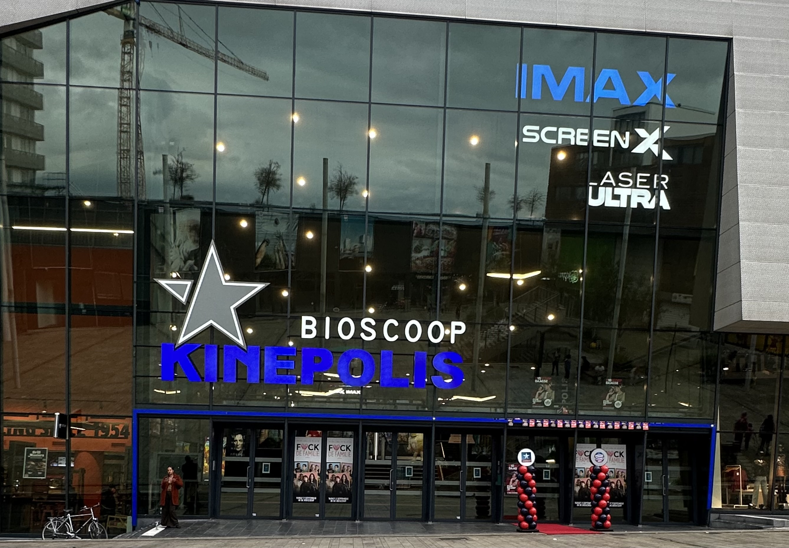
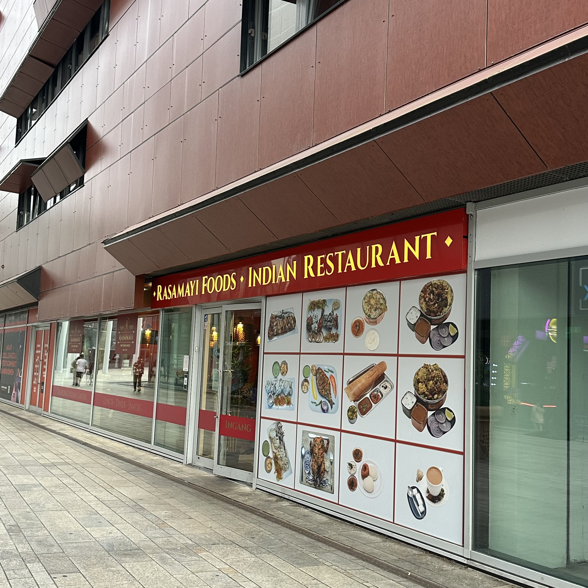
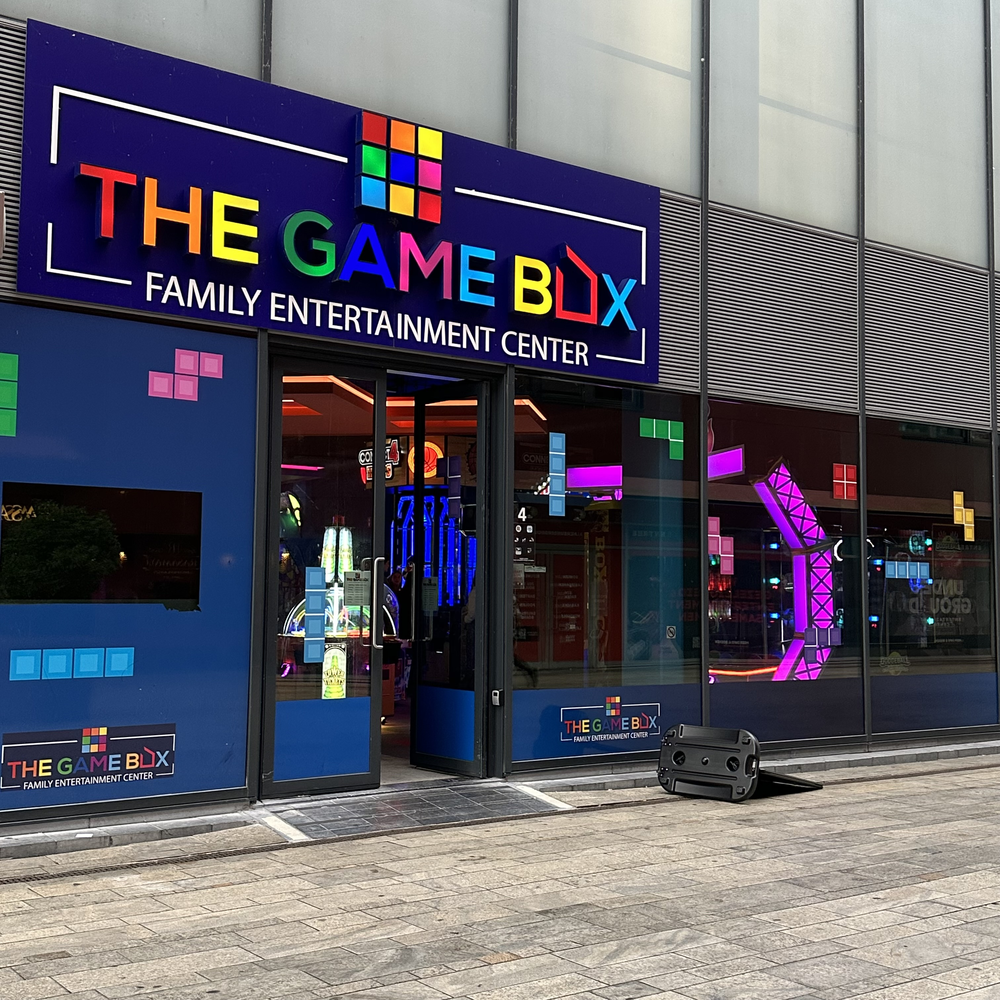
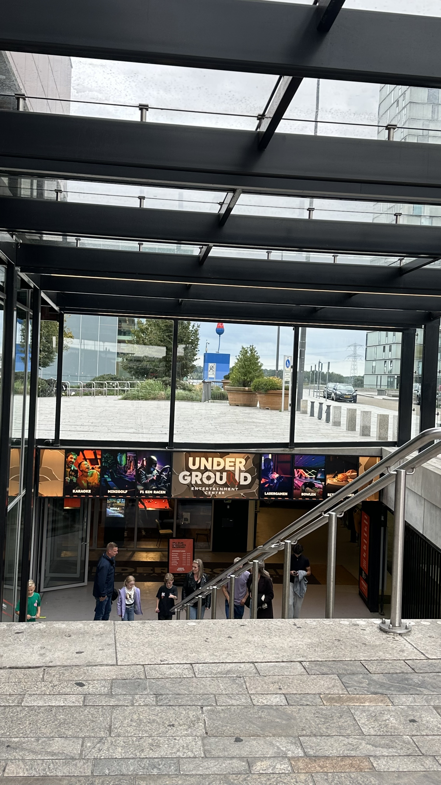
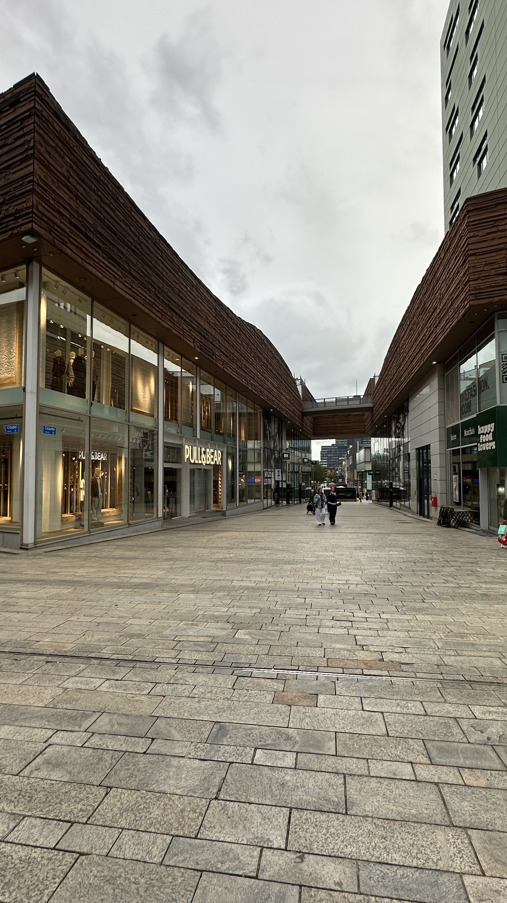

Shopping & Entertainment in Almere
Almere Centrum offers a variety of shops, restaurants and entertainment venues. Visitors can enjoy shopping, dining, gaming and cinema activities in the city centre.

Almere Centrum offers a variety of shops, restaurants and entertainment venues. Visitors can enjoy shopping, dining, gaming and cinema activities in the city centre.

This is Rasamayi Foods, an authentic Indian restaurant located right in the center of Almere Stad (near the City Mall). A casual, family-friendly dining spot that is a go-to for locals seeking traditional Indian flavors and street-food style snacks.

A neon-lit family entertainment center using a rechargeable playcard system to track credits and claim prizes.
It features a wide variety of attractions, including racing simulators, classic pinball, air hockey, and ticket-redemption games.

It offers a wide variety of indoor attractions under one roof, including bowling (bowling), lasergame (laser tag), glow-in-the-dark minigolf, karaoke bars, F1 sim racing, and virtual reality (VR) gaming.
A popular subterranean venue featuring an on-site bar and dining area, ideal for families, parties, and group events.

This is Citadel, a key retail street inside City Mall Almere.
A modern, multi-layered urban space featuring ground-floor shops like Pull&Bear with residential apartments integrated directly above.